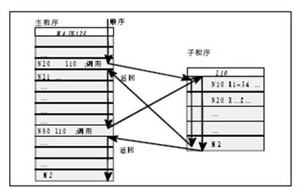

| 子程序 |
1.应用
原则上讲主程序和子程序之间并没有区别。
用子程序编写经常重复进行的加工，比如某一确定的轮廓形状。子程序位于主程序的一种型式就是加工循环，加工循环包含一般通用的加工工序，诸如螺纹切削，�攘锨邢骷庸さ鹊取Ｍü�给规定的计算参数赋值就可以实现各种具体的加工。
2.结构
子程序的结构与主程序的结构一样，在子程序中也式最后一个程序段中用M2结束子程序运行运行。子程序结束后返回主程序。
3.程序结束
除了用M2指令外，还可以用RET指令结束子程序。
RET要求占用一个独立的程序段。
用RET指令结束子程序、返回主程序时不会中断G64连续路径运行方式，用M2指令则会中断G64运行方式，并进入停止状态。

5.子程序调用
在一个程序中（主程序或子程序）可以直接用程序名调用子程序。子程序调用要求占用一个独立的程序段。
举例：
N10 L785 P3 ；调用子程序L785
N20 WELLE7 ；调用子程序WELLE7
6.程序重复调用
如果要求多次连续地执行某一子程序,则在编程时必须在所调用子程序的程序名后地址P下写入调用次数,最大次数可以为9999(P1...P9999)
举例:
N10 L785 P3 ；调用子程序L785 ,运行3次
7.嵌套深度
子程序不仅可以从主程序中调用,也可以从其它程序中调用,这个过程称为子程序的嵌套。子程序的嵌套深度可以为三层,也就是四级程序界面(包括主程序界面) 。
注释:在使用加工循环进行加工时,要注意加工循环程序也同样属于四级程序界面中的一级。
8.说明
在子程序中可以改变模态有效的G功能,比如G90到G91的变换.在返回调用程序时请注意检查一下所有模态有效的功能指令,并按照要求进行调整。
对于R参数也需同样注意，不要无意识地用上级程序界面中所使用的计算参数来修改下级程序界面的计算参数。